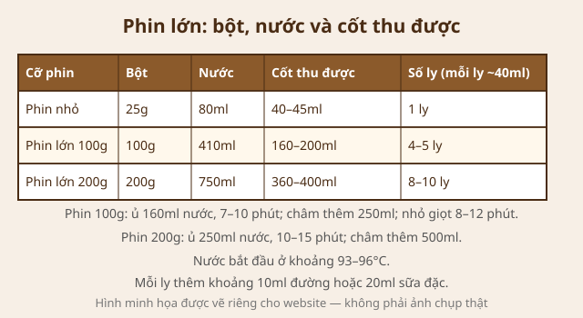

Pha cà phê phin cho nhiều người: phin lớn 100g và cách giữ nóng
Tác giả: Ruler
Pha một phin nhỏ cho mình uống mỗi sáng đã quen tay, nhưng pha cho cả nhà năm người, cho một buổi họp văn phòng hay một bàn khách đông thì khác hẳn. Nhiều người nghĩ chỉ cần nhân công thức phin nhỏ lên là xong: 25g bột thành 100g, 80ml nước thành 320ml. Nhưng phin lớn không phải là bốn phin nhỏ gộp lại. Lớp bột trong phin lớn dày hơn nhiều, nước thấm xuống chậm hơn, và phần cốt chảy ra đầu tiên đã bắt đầu nguội trong khi phần cuối còn đang nhỏ giọt. Vì vậy, phin lớn có công thức riêng, thời gian ủ riêng và cách giữ nóng riêng.
Bài này dùng điểm bắt đầu quen thuộc của nhiều hướng dẫn: phin lớn 100g bột và 410ml nước, cho ra khoảng 160–200ml cốt, đủ cho 4–5 ly. Bài cũng nói tới phin 200g cho 8–10 ly, cách chia cốt cho đều từng ly và cách giữ ấm khi pha trước giờ uống.
Khi nào nên dùng phin lớn
Phin lớn hợp với những lúc bạn cần pha một lần cho nhiều người uống cùng lúc: bữa sáng của gia đình đông người, buổi họp đầu giờ ở văn phòng, tiệc nhỏ ở nhà, hoặc quán bán mang đi vào giờ cao điểm. Ưu điểm rõ nhất là tiết kiệm thời gian: một phin lớn pha một lần thay cho bốn, năm phin nhỏ pha lần lượt. Ngoài ra, pha chung một mẻ giúp các ly giống nhau hơn, vì cùng một loại bột, cùng một lượng nước và cùng một thời gian chiết xuất.
Phin lớn cũng có mặt hạn chế. Nếu pha hỏng một mẻ phin lớn, bạn mất cùng lúc bốn, năm ly cà phê, trong khi pha hỏng một phin nhỏ chỉ mất một ly. Vì vậy, phin lớn đòi hỏi người pha cẩn thận hơn ở khâu cân đong và thời gian chờ. Nếu bạn mới tập pha phin, hãy pha thành thạo phin nhỏ trước, rồi mới chuyển sang phin lớn khi đã nắm được cách bột nở, cách nước chảy và cách nhận biết ly ngon.
Một lưu ý khác: phin lớn không hợp để pha cho một người rồi cất cốt dùng dần trong nhiều ngày. Cốt cà phê pha sẵn để ngăn mát chỉ nên dùng trong ngày, hương thơm sẽ giảm so với pha mới. Vì vậy, hãy pha phin lớn khi biết chắc có đủ người uống hết trong buổi đó.
Chọn cỡ phin theo số người uống
Phin bán ngoài chợ và trên mạng có đủ cỡ, từ loại nhỏ pha cho một người tới loại lớn pha cho cả bàn đông. Điều đầu tiên cần chốt là buổi pha đó có bao nhiêu người uống, vì mỗi cỡ phin gắn với một lượng bột và một lượng nước riêng — dùng chung một công thức cho mọi cỡ sẽ làm ly lệch vị.
| Cỡ phin | Bột cho một mẻ | Nước cho một mẻ | Cốt thu được | Số ly (mỗi ly khoảng 40ml cốt) |
|---|---|---|---|---|
| Phin nhỏ | 25g | 80ml | 40–45ml | 1 ly |
| Phin lớn 100g | 100g | 410ml | 160–200ml | 4–5 ly |
| Phin lớn 200g | 200g | 750ml | 360–400ml | 8–10 ly |

Hình minh họa tự vẽ — không phải ảnh chụp thật.
Bảng trên do chúng tôi tự tổng hợp từ các hướng dẫn đã dẫn trong bài. Con số của phin nhỏ lấy từ Bài 01 của website này. Con số của phin 100g là điểm chung của ba hướng dẫn: Sapo, Century Coffee và Laven Coffee đều dùng 100g bột và 410ml nước, thu được 160–200ml cốt. Con số của phin 200g lấy từ Century Coffee: 200g bột, 250ml nước ủ và 500ml nước châm thêm, tổng 750ml nước, thu được 360–400ml cốt.
Phin lớn 100g thường có đáy khoảng 9cm, miệng khoảng 12cm và cao khoảng 9,5cm, theo số đo của Laven Coffee. Khi chọn mua, bạn nên kiểm tra đáy phin: lỗ đục đều, không tắc, nắp gài đặt vừa với thân phin. Phin nhôm dày hoặc phin inox đều dùng được; điều quan trọng là phin sạch và nắp gài khít, vì lớp bột trong phin lớn dày, nước sẽ tìm đường đi tắt nếu nắp gài đặt lệch.
Công thức phin lớn 100g: 100g bột, 410ml nước
Điểm bắt đầu cho phin lớn 100g là 100g bột cà phê và tổng cộng 410ml nước sôi. Ba hướng dẫn Sapo, Century Coffee và Laven Coffee đều dùng đúng hai con số này, chia thành khoảng 160ml nước ủ lúc đầu và 250ml nước châm thêm sau đó. Tỉ lệ này tương đương khoảng 1:4,1 giữa bột và nước, nằm trong khoảng tỉ lệ thường dùng 1:4–1:5 mà Sapo nhắc tới cho phin nói chung.
Nhiệt độ nước có một khoảng chênh nhỏ giữa các hướng dẫn. Sapo dùng nước sôi ở 90–96 độ C. Century Coffee dùng nước sôi ở 95–98 độ C. Hai khoảng này chồng lên nhau ở 95–96 độ C. Bắt đầu ở 93–96 độ C là an toàn: nước mới sôi để nguội một chút rồi hãy rót, và nếu ly đắng gắt thì hạ nhiệt ở mẻ sau. Nước sôi già rót thẳng vào lớp bột dày của phin lớn thường làm ly đắng gắt hơn, vì phần bột ở trên tiếp xúc với nước nóng lâu hơn phần bột ở dưới.
Độ xay cho phin lớn nên ở mức vừa, không quá mịn. Sapo dặn rõ: dùng bột xay vừa để tránh nghẹt phin, vì lớp bột dày đã làm nước chảy chậm rồi, bột quá mịn sẽ làm phin gần như đứng nước. Nếu bạn mua bột xay sẵn, nói rõ với người bán là để pha phin lớn, hoặc lấy đúng loại bột bạn vẫn dùng cho phin nhỏ, vì cỡ xay vừa thường dùng chung được cho cả hai cỡ phin.
Cách pha phin lớn giống cách pha phin nhỏ đã viết ở Bài 01 (tráng phin, cho bột, ủ, châm nước, thu cốt), chỉ khác ở lượng và thời gian — phần dưới đây chỉ viết những điểm khác. Cho 100g bột vào phin rồi đặt nắp gài lên. Laven Coffee gợi ý một biến tấu: chia bột làm hai phần, phần lớn 90g nằm dưới nắp gài, phần còn lại 10g rải phía trên, với ý đồ lớp bột trên giữ nước lại lâu hơn đôi chút. Bạn có thể pha thử cả cách thường và cách chia bột này rồi giữ lại cách nào cho ly ổn định hơn với chiếc phin của mình.
Bước ủ quyết định phần lớn chất lượng của mẻ phin lớn, vì lớp bột dày cần thời gian để nước thấm tới tận đáy. Rót 160ml nước sôi từ giữa phin rồi đi dần ra mép, rót chậm tay để nước thấm đều và bột có thời gian nở ra. Về thời gian chờ, Sapo và Century Coffee ghi khoảng 7–10 phút, trong khi Laven Coffee ghi khoảng 5–7 phút — hai con số khác nhau này là bình thường, vì mỗi loại bột nở nhanh chậm khác nhau. Thay vì bấm giờ cứng nhắc, bạn hãy nhìn mặt bột: khi bột đã nở đều và không còn mảng khô lớn thì mới châm tiếp. Nếu sau 7 phút mà giữa phin vẫn còn khô, hãy chờ thêm, đừng vội rót nước châm.
Khi bột đã nở đều, rót nốt 250ml nước sôi còn lại vào phin, đậy nắp lại rồi để cà phê tự chảy xuống ca. Sapo khuyên nên để phin chảy trong khoảng 8–12 phút — đủ lâu để nước thấm hết lớp bột dày, nhưng không chậm đến mức cốt bị đắng. Tổng thời gian từ lúc rót nước ủ đến lúc cà phê chảy hết thường khoảng 15–22 phút, cộng từ thời gian ủ 7–10 phút và thời gian nhỏ giọt 8–12 phút, dài hơn hẳn phin nhỏ. Rót nước châm thì cứ từ tốn, đưa tay đi vòng khắp mặt bột. Rót gấp quá, nước chưa kịp thấm đều đã chảy xuống ca: phần bột ở rìa bị lấy vị quá đà, phần bột ở giữa vẫn còn khô.
Khi dòng chảy đã chậm hẳn, ép nhẹ nắp gài xuống một lần để lấy nốt phần cốt còn đọng trong lớp bột dày, rồi dỡ phin ra khỏi ca. Lượng cốt thu được thường khoảng 160–200ml. Khoảng này không phải con số cố định cho mọi mẻ: loại hạt, độ xay và chính chiếc phin của bạn đều làm nó dịch lên hoặc xuống, vì vậy hãy đo thử một lần bằng ca có vạch ml để biết phin của mình cho ra bao nhiêu, rồi lấy đó làm mốc cho lần pha sau.
Công thức phin lớn 200g cho 8–10 ly
Khi cần pha cho 8–10 người, một lựa chọn là phin lớn loại 200g thay vì pha hai phin 100g. Với cỡ này, Century Coffee ghi: tráng phin, cho khoảng 200g bột vào, lắc nhẹ rồi ấn nhẹ nắp gài; ủ bằng 250ml nước sôi ở 95–98 độ C, chờ khoảng 10–15 phút cho bột nở đều; sau đó châm thêm 500ml nước, đậy nắp và chờ cà phê nhỏ giọt xuống ca. Mẻ này cho khoảng 360–400ml cốt, đủ cho 8–10 ly, mỗi ly khoảng 40ml.
So với phin 100g, phin 200g có hai điểm khác cần nhớ. Thứ nhất, thời gian ủ dài hơn: 10–15 phút thay vì 7–10 phút, vì lớp bột dày gấp đôi cần nhiều thời gian hơn để nước thấm đều. Thứ hai, lượng nước ủ cũng tăng theo tỉ lệ: 250ml nước ủ cho 200g bột, so với 160ml nước ủ cho 100g bột. Nếu bạn ủ phin 200g với quá ít nước, phần bột ở giữa có thể còn khô khi bạn châm nước chính, và ly sẽ nhạt dù bạn đã dùng đủ bột.
Một lựa chọn khác là pha hai phin 100g cùng lúc thay vì một phin 200g. Cách này tốn thêm một chiếc phin, nhưng mỗi mẻ nhỏ hơn nên dễ kiểm soát hơn, và nếu một mẻ hỏng thì mẻ còn lại vẫn dùng được. Với người mới pha phin lớn, pha hai phin 100g là cách an toàn hơn. Chỉ nên dùng phin 200g khi bạn đã pha thành thạo phin 100g và muốn tiết kiệm thời gian.
Chia cốt cho đều từng ly
Pha xong một ấm cốt 160–200ml chưa phải là xong việc. Bạn còn phải chia cốt cho 4–5 ly sao cho ly nào cũng đậm như nhau. Phần cốt chảy ra đầu tiên thường đậm nhất, phần chảy ra sau loãng dần. Nếu bạn rót lần lượt từ đầu đến cuối mà không khuấy, ly đầu tiên sẽ đậm hơn ly cuối cùng. Vì vậy, trước khi chia, bạn nên khuấy nhẹ toàn bộ cốt trong ca cho đều, rồi mới rót ra từng ly.
Mỗi ly nên nhận khoảng 40–45ml cốt. Bạn có thể dùng ca có vạch ml để đong, hoặc dùng một chiếc ly nhỏ làm chuẩn: rót thử một lần, đánh dấu mức cốt trong ly, rồi rót các ly sau tới cùng mức đó. Cách này không chính xác bằng ca đong, nhưng đủ dùng cho bữa sáng ở nhà.
Sau khi chia cốt, bạn thêm đường hoặc sữa đặc cho từng ly theo khẩu vị của từng người, vì không phải ai cũng uống ngọt như nhau. Laven Coffee tính rằng mỗi ly cốt 40–45ml thì cho vào chừng 10ml đường (tương đương 5g), hoặc 20ml sữa đặc nếu uống cà phê sữa. Nhân lên cho cả ấm 5 ly thì thành khoảng 50ml đường, tức khoảng 25g, hoặc khoảng 100ml sữa đặc. Nhưng pha chung chỉ hợp khi mọi người uống cùng một độ ngọt. Khi có người uống đen, người uống ngọt, bạn nên pha đường và sữa riêng từng ly sau khi đã chia cốt.
Với cà phê đá, bạn rót cốt đã khuấy đều lên ly đá đã chuẩn bị sẵn, mỗi ly một phần cốt và đá. Chú ý cho đủ đá ngay từ đầu: ly nào ít đá quá thì đá tan nhanh, nước đá loãng dần vào cốt và ly nhạt đi trước khi bạn uống hết. Cách làm chi tiết cho từng ly đá có trong Bài 07 của website này.
Giữ nóng khi pha trước giờ uống
Phin lớn thường được pha trước giờ mọi người ngồi vào bàn, nên giữ nóng là việc cần tính trước. Cách đơn giản nhất là tráng phin và ca đựng cốt bằng nước nóng trước khi pha, để phin và ca không lấy mất nhiệt của cà phê. Trong lúc chờ cà phê nhỏ giọt, bạn đậy nắp phin lại để giữ nhiệt, đừng mở nắp ra xem liên tục.
Sau khi thu đủ cốt, bạn có thể rót cốt vào bình giữ nhiệt đã tráng qua nước nóng. Bình giữ nhiệt giúp cốt giữ ấm trong khoảng một buổi sáng mà không cần đun lại. Bạn không nên đun cốt đã pha trên bếp để hâm nóng, vì đun lại làm hương thơm bay đi nhanh và vị thay đổi. Nếu cốt đã nguội hẳn, tốt hơn là pha một mẻ mới, hoặc uống cốt nguội với đá thay vì cố hâm nóng.
Một điểm khác cần nhớ là nước dùng để pha. Century Coffee khuyên không dùng nước máy vừa hứng từ vòi: nước máy còn mùi clo, mùi đó làm ly cà phê mất hương. Cách họ làm là hứng nước vào lu nhỏ hoặc bình lớn rồi để yên khoảng 12 tiếng cho mùi bay hết. Nước giếng bơm cũng nên tránh, vì nước giếng hay nhiễm phèn và có mùi lạ, uống sẽ thấy cà phê mất mùi thơm. Nước đóng chai thì dùng được nhưng tốn chi phí khi pha số lượng lớn. Với gia đình pha mỗi sáng, nước máy đã lắng là lựa chọn hợp lý nhất.
Cốt pha sẵn có thể cất trong ngăn mát tủ lạnh và dùng trong ngày, theo Đặc Sản 4 Phương. Hương thơm sẽ giảm so với pha mới, nên bạn chỉ nên pha trước vài tiếng, không nên pha từ tối hôm trước cho sáng hôm sau rồi mong ly vẫn thơm như mới pha.
Khi phin lớn pha ra không ngon
Bảng sau gom các lỗi hay gặp khi pha phin lớn, kèm nguyên nhân có thể và cách chỉnh — mỗi dòng chỉ sửa một yếu tố ở lần pha sau, để bạn biết rõ thay đổi nào đã làm mẻ ngon hơn.
| Dấu hiệu | Nguyên nhân có thể | Chỉnh một thứ ở lần sau |
|---|---|---|
| Cốt nhạt, các ly đều loãng | Ít bột so với nước, hoặc ủ chưa đủ thời gian cho lớp bột dày | Kiểm tra lại cân: đủ 100g bột cho 410ml nước; chờ đủ 7–10 phút sau khi ủ |
| Cốt đắng gắt, khó uống | Nước quá nóng, hoặc ủ quá lâu trước khi châm nước chính | Để nước nguội về khoảng 93–96 độ C; rút ngắn thời gian ủ còn khoảng 7 phút |
| Phin chảy rất chậm, gần như đứng nước | Bột quá mịn, hoặc nắp gài ấn quá chặt | Xay thô hơn một nấc; ấn nắp gài nhẹ hơn |
| Phin chảy quá nhanh, cốt loãng | Bột quá thô, hoặc nắp gài quá nhẹ | Xay mịn hơn một nấc; ấn nắp gài chắc hơn một chút |
| Các ly đậm nhạt khác nhau | Chia cốt mà không khuấy đều trước | Khuấy nhẹ toàn bộ cốt trong ca rồi mới rót ra từng ly |
| Cốt có mùi lạ, không phải mùi cà phê | Nước có mùi clo hoặc phèn, hoặc phin còn dầu cũ | Hứng nước máy để lắng qua đêm (khoảng 12 tiếng) rồi mới pha; rửa phin thật sạch và để khô hoàn toàn |
Một lỗi phổ biến khi chuyển từ phin nhỏ sang phin lớn là giữ nguyên thời gian ủ của phin nhỏ. Phin nhỏ ủ khoảng 2–3 phút là đủ theo công thức phin nhỏ trong Bài 01 của website này, nhưng phin lớn cần 7–10 phút vì lớp bột dày gấp bốn lần. Nếu bạn châm nước chính khi bột còn khô ở giữa, phần bột khô đó sẽ không chiết ra vị, và ly sẽ nhạt dù bạn đã dùng đủ 100g bột.
Một lỗi khác là rót nước quá nhanh. Với phin nhỏ, bạn rót 50ml nước châm thêm trong vài giây là xong. Với phin lớn, bạn rót 250ml nước, và nếu rót ào một lúc, nước sẽ dồn về một phía, khoét một rãnh qua lớp bột và chảy xuống mà không thấm đều. Hãy rót từ từ, đi vòng từ giữa phin ra mép, để nước thấm đều khắp mặt bột thay vì dồn về một phía.
Checklist trước khi pha cho đông người
Trước khi bắt đầu pha, rà một lượt mẫu kiểm tra tự làm dưới đây, để không phải dừng giữa chừng vì thiếu thứ gì.
| Hạng mục kiểm tra | Đã xong chưa |
|---|---|
| Đếm đủ số người uống, chọn cỡ phin 100g (4–5 ly) hay 200g (8–10 ly) | ☐ |
| Cân đủ bột: 100g cho phin 100g, 200g cho phin 200g | ☐ |
| Đong đủ nước: 410ml cho phin 100g, 750ml cho phin 200g | ☐ |
| Nước đã để lắng nếu dùng nước máy, hoặc đã chuẩn bị nước sạch không mùi lạ | ☐ |
| Phin đã tráng nước nóng, đáy không tắc, nắp gài đặt vừa | ☐ |
| Ca đựng cốt đã tráng nước nóng, có vạch ml để đo cốt thu được | ☐ |
| Ly, đường, sữa đặc và đá đã chuẩn bị đủ cho số người uống | ☐ |
| Bình giữ nhiệt đã tráng nước nóng nếu cần giữ ấm cốt | ☐ |
Kết luận
Pha cà phê phin cho nhiều người không khó hơn pha một ly, nhưng cần tính toán kỹ hơn ở ba chỗ: chọn đúng cỡ phin theo số người, cho lớp bột dày đủ thời gian ủ, và chia cốt đều cho từng ly. Hãy bắt đầu với phin 100g: 100g bột, 410ml nước ở khoảng 93–96 độ C, ủ 160ml trong 7–10 phút rồi châm thêm 250ml, thu khoảng 160–200ml cốt cho 4–5 ly. Khuấy đều cốt trước khi chia, thêm đường và sữa riêng từng ly, và giữ ấm bằng bình giữ nhiệt đã tráng nóng. Khi đã pha thành thạo phin 100g, bạn mới nên thử phin 200g cho 8–10 ly, với thời gian ủ dài hơn là 10–15 phút.
Nguồn tham khảo
- Sapo, "Cách pha cà phê phin chuẩn vị, đậm đà truyền thống khó quên" — phin lớn dùng 100g bột và 410ml nước sôi 90–96 độ C, ủ 160ml, chờ 7–10 phút rồi châm thêm 250ml, thu được khoảng 160–200ml cốt; thời gian nhỏ giọt lý tưởng khoảng 8–12 phút; tỉ lệ pha thường 1:4–1:5; phối trộn Robusta–Arabica phổ biến 8:2, có thể điều chỉnh 7:3 hoặc 5:5 (truy cập 23/11/2026): https://www.sapo.vn/blog/cach-pha-ca-phe-phin
- Century Coffee, "Bí quyết pha cà phê phin ngon để bán" — phin lớn 100g: ủ 160ml nước sôi 95–98 độ C, chờ 7–10 phút, châm thêm 250ml, thu 160–200ml cốt đủ cho 4–5 ly, mỗi ly khoảng 40ml; phin lớn 200g: ủ 250ml nước sôi 95–98 độ C, chờ 10–15 phút, châm thêm 500ml, thu 360–400ml cốt đủ cho 8–10 ly; nước máy nên để lắng khoảng 12 tiếng cho bay mùi clo, không nên dùng nước giếng bơm nhiễm phèn (truy cập 23/11/2026): https://centurycoffee.vn/bi-quyet-pha-ca-phe-phin-ngon-de-ban-century-coffee-95-27.html
- Laven Coffee, "Bỏ túi cách pha cà phê phin lớn chuẩn gu Việt dành cho chủ quán" — phin lớn 100g và 410ml nước sôi, phin có đáy 9cm, miệng 12cm, cao 9,5cm; cho 90g bột xuống dưới nắp gài rồi rải thêm 10g bột lên trên; ủ 160ml, chờ khoảng 5–7 phút rồi châm thêm 250ml, thu được khoảng 160–200ml cốt, pha được 5 ly; cho thêm khoảng 10ml đường (5g) hoặc 20ml sữa đặc cho mỗi ly 40–45ml cà phê; phin lớn phục vụ tới 8–10 ly cùng lúc (truy cập 23/11/2026): https://www.lavencoffee.com/blogs/kien-thuc-ca-phe/bo-tui-cach-pha-ca-phe-phin-lon-chuan-gu-viet-danh-cho-chu-quan
- Đặc Sản 4 Phương, "Cà phê sữa đá pha phin: tỷ lệ cà phê, sữa đặc và mẹo không nhạt" — cốt pha sẵn để ngăn mát dùng trong ngày (truy cập 23/11/2026): https://dacsan4phuong.vn/ca-phe-sua-da-cach-pha-phin-dam-vi-viet-nam.htm